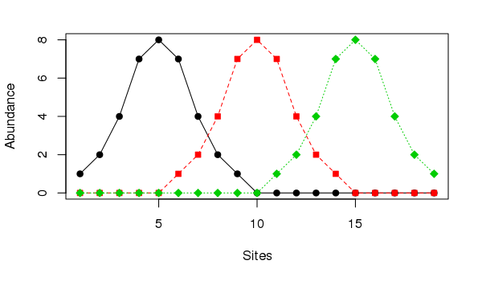
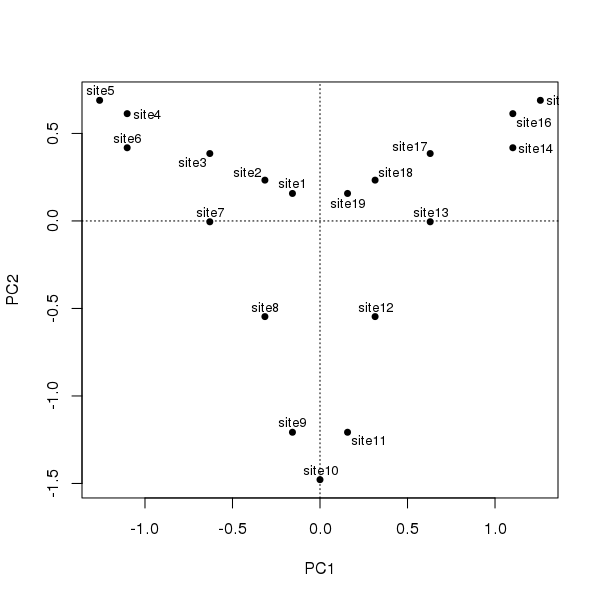
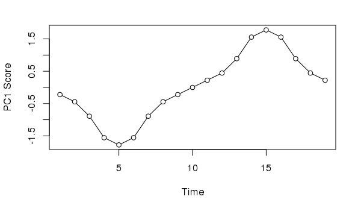
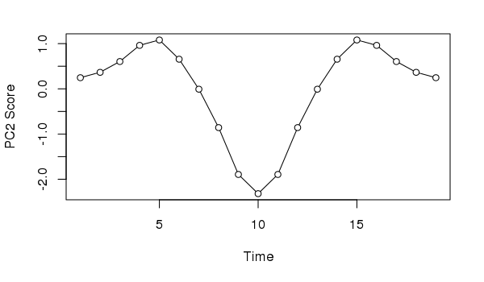
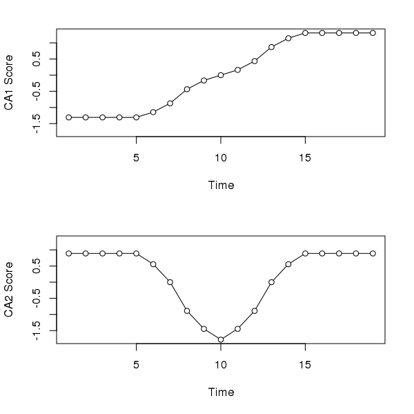
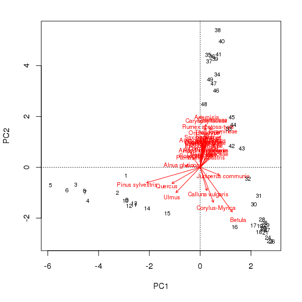

Summarising multivariate palaeoenvironmental data
part 1
Posted in
Tagged
Blogroll
Ordination methods that yield orthogonal axes of variation are often used to summarise the multivariate data obtained from sediment cores. Usually the first or, less often, the first few ordination axes are taken as directions of change or the main patterns of variance in the multivariate data. There is an oft-overlooked issue with this approach that has the potential to complicate the interpretation of the extracted axes, especially where there is a single or strong gradient in the data.
The horseshoe effect is a well known and discussed issue with principal component analysis (PCA) (e.g. Goodall, 1954; Noy-Meir and Austin, 1970; Swan, 1970). Similar geometric artefacts also affect correspondence analysis (CA), although the ordering of sites along axes is not inverted at the ends as they can be in PCA. The problem is particularly acute when the is a single gradient in the data. An extreme example is given in Table 9.7 of Legendre and Legendre (2012, 482), wherein the abundances of three species at 19 sites are stated. The data set can be created in R using
ll <- data.frame(Species1 = c(1,2,4,7,8,7,4,2,1,rep(0,10)),
Species2 = c(rep(0, 5),1,2,4,7,8,7,4,2,1, rep(0, 5)),
Species3 = c(rep(0, 10),1,2,4,7,8,7,4,2,1))
rownames(ll) <- paste0("site", seq_len(NROW(ll)))
matplot(ll, type = "o", col = 1:3, pch = 21:23, bg = 1:3,
ylab = "Abundance", xlab = "Sites")
Should we care to treat the ordering of sites as a time series, illustrating succession, such as we might observe in an admittedly simplified sediment core, and subject them to PCA following standard conventions, we would observe the following configuration
library("vegan")
ll.pca <- rda(ll)
ordipointlabel(ll.pca, scaling = 1, display = "sites", pch = 19)
The degree of curvature, the horseshoe effect, is exceedingly strong in these data; the single gradient is decomposed into two axes of similar explanatory power that together explain ~90% of the variance in the data.
> ll.pca
Call: rda(X = ll)
Inertia Rank
Total 22.63
Unconstrained 22.63 3
Inertia is variance
Eigenvalues for unconstrained axes:
PC1 PC2 PC3
11.333 9.199 2.099
Taking the first axis and plotting the sample scores as a time series we might, if we didn’t know how the data were generated, invoke some cyclic process to explain the pattern of temporal variance extracted from the data
plot(scores(ll.pca, choices = 1, display = "sites")[,1] ~
seq_len(NROW(ll)),
type = "o", bg = "white", pch = 21,
xlab = "Time", ylab = "PC1 Score")
Similarly, if we took the second PCA axis and tried to provide an interpretation, we might incorrectly assume the data suggests the impact of and response to a pulse perturbation.
plot(scores(ll.pca, choices = 2, display = "sites")[,1] ~
seq_len(NROW(ll)),
type = "o", bg = "white", pch = 21,
xlab = "Time", ylab = "PC2 Score")
Neither interpretation would be correct; in this case we know the data show a simple successional response of the species along the gradient.
Correspondence analysis (CA) does a better job than PCA with the first axis; its gets the ordering correct and hence reconstructs the gradient of sorts. However, because CA works on relative compositional differences, the site scores for samples at the start (end) of the gradient don’t vary as there is but a single species present in these samples and hence they have the same relative compositions. The second CA axis is similar to the second PCA axis, suggesting a pulse disturbance and subsequent recovery.
layout(matrix(1:2))
sc <- scores(ll.ca, choices = 1:2, display = "sites")
ylim <- range(sc)
plot(sc[,1] ~ seq_len(NROW(ll)),
type = "o", bg = "white", pch = 21,
xlab = "Time", ylab = "CA1 Score", ylim = ylim)
plot(sc[,2] ~ seq_len(NROW(ll)),
type = "o", bg = "white", pch = 21,
xlab = "Time", ylab = "CA2 Score", ylim = ylim)
layout(1)
And before you accuse me of picking a weird made-up data set just to prove a point, consider the well-studied Abernethy Forest, Scotland, pollen sequence from the late glacial (Birks and Mathewes, 1978). The PCA biplot of these data shows a strong curved structure, reminiscent of the horseshoe we observed earlier for the made-up data.
## Load analogue
library("analogue")
## Load the Abernethy Forest data
data(abernethy)
## Remove the Depth and Age variables
abernethy2 <- abernethy[, -(37:38)]
## Fit the PCA & plot
aber.pca <- rda(abernethy2)
biplot(aber.pca, scaling = -2)
scaling = -2The pollen stratigraphy shows a switch from Pinus dominated levels to a Betula dominant phase followed by the expansion of Artemesia. If we follow the curve in the PCA biplot of these data, this is exactly what we observe; first the Pinus to Betula transition captured by axis 1 and then the reduction in Betula and the expansion of Artemesia on axis 2. What a palynologist would interpret as a species successional response has been decomposed into two ordination axes, which if taken individually would underplay the change in composition later (earlier) in the sequence using PCA axis 1 (axis 2) alone. In addition, the PCA was supposed to simplify the description of change in the core but now a single gradient has to be represented by two variables. This complicates presentation of the scores as components of a stratigraphic plot or requires a separate biplot figure.
In the next post in this series I’ll look at a relatively old technique that palaeoecologists might employ to address the issues described above when summarising stratigraphic data; principal curves (De’ath, 1999; Hastie and Stuetzle, 1989).
Social